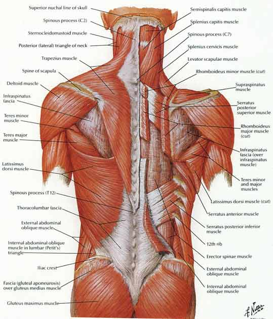
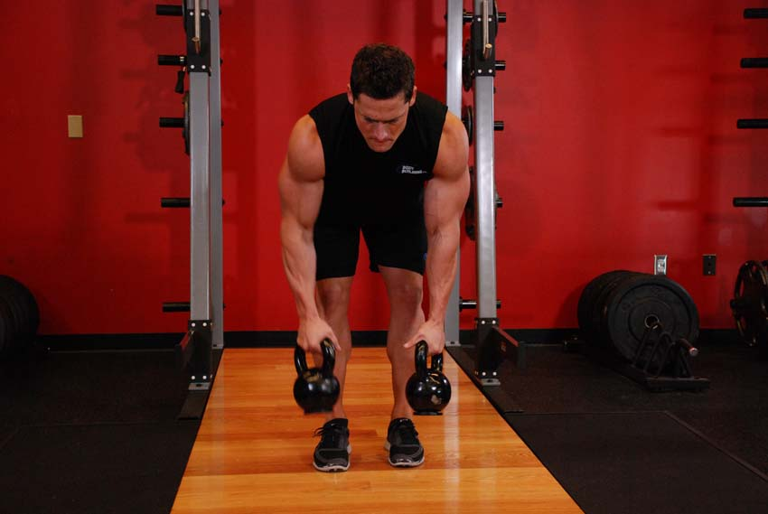
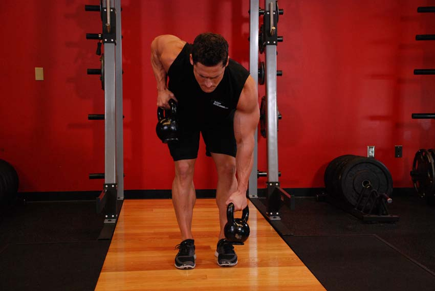
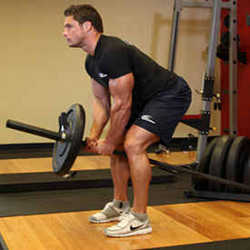
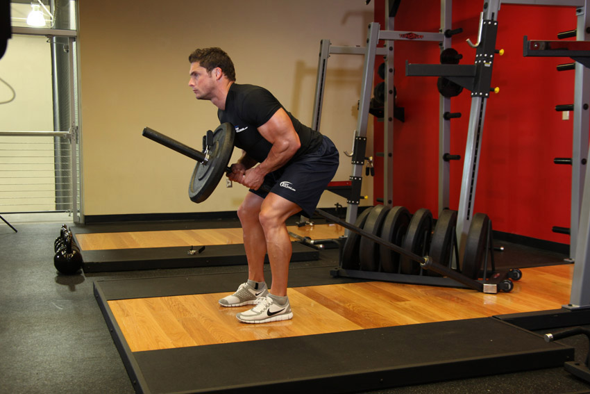
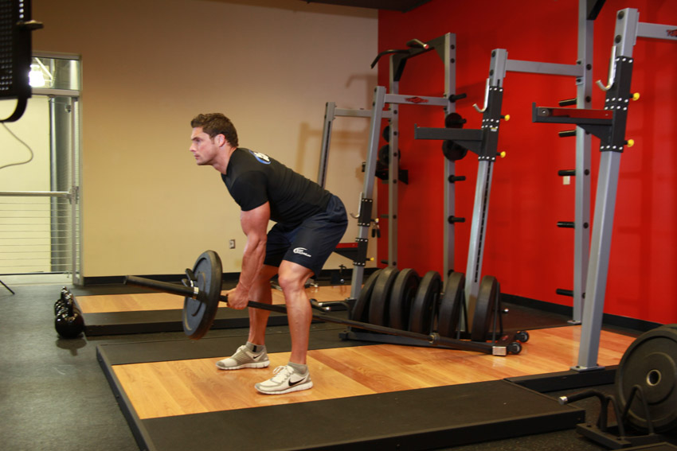
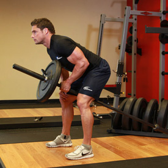
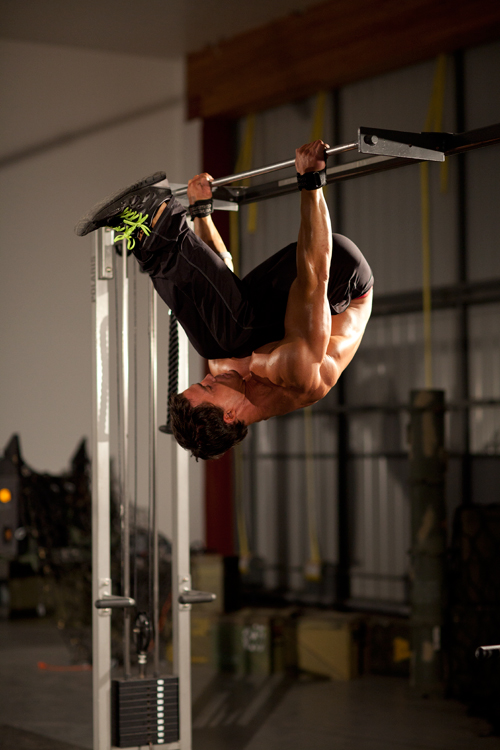
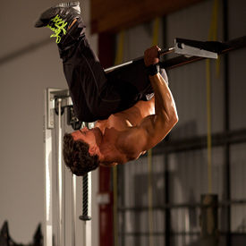

<!DOCTYPE html PUBLIC "-//W3C//DTD XHTML 1.0 Strict//EN" "http://www.w3.org/TR/xhtml1/DTD/xhtml1-strict.dtd">
<!--
Design by Free CSS Templates
http://www.freecsstemplates.org
Released for free under a Creative Commons Attribution 2.5 License

Name       : Open-Air
Description: A two-column, fixed-width design with dark color scheme.
Version    : 1.0
Released   : 20120818

-->
<html xmlns="http://www.w3.org/1999/xhtml"/>
<?php
session_start();
include('mygymdbConnect.php');
include('SignUp.php');
?>
<html>
    <head>
        <title> MyGym</title>
        <div style="position :absolute;top:20px;left:40px">
            <p><h2>MY<br/> 
                    GYM 
                    <br/></h2></p></div>
        <div style="position: absolute ;left:  200px; top: 20px;"> </div>
        <div style="position:absolute;top:37%;left:35%"/>
        <link href="http://fonts.googleapis.com/css?family=Oswald:400,300" rel="stylesheet" type="text/css" />         

        <link href="style.css" rel="stylesheet" type="text/css" media="screen" />
        <a href="home.php" style="text-decoration: none;color: black;font:serif;font-weight: bold;  ">Home |</a>
        <a href="About.html" style="text-decoration: none;color: black;font:serif;font-weight: bold;  ">About |</a>
        <a href="sign up.html" style="text-decoration: none;color: black;font:serif;font-weight: bold;  ">Sign up |</a>
        <a href="Activities.html" style="text-decoration: none;color: black;font:serif;font-weight: bold;  ">Activities |</a>
        <a href="Trainers.html" style="text-decoration: none;color: black;font:serif;font-weight: bold;  ">Trainers |</a>
        <a href="classes.html" style="text-decoration: none;color: black;font:serif;font-weight: bold;  ">Classes |</a>
        <a href="Training.html" style="text-decoration: none;color: black;font:serif;font-weight: bold;  ">Train |</a>   

    </head>

    <body>
        <div style="position: absolute;left: -300px">
            <table  cellpadding="10" cellspacing="10" height="400px" width="1200px">
                <tr><td></img></td>
                    <td><b>Description</b><br></br>
                        The spine is bordered by several groups of muscles, including the intertransversarii muscle which facilitate movement between the individual vertebrae, and the multifidus spinae, which facilitate the movement of the spine as a whole.
                        Other muscles in the back are associated with the movement of the neck and shoulders. The trapezius muscle, which is named from its trapezium-like shape, runs between the neck, the anterior chain, the two shoulders, and the thoracic vertebra, T12. The large latissimus dorsi make a triangle from the shoulder to the hip.
                    </td></tr>
            </table></div>
        <div style="position: absolute;left: -200px;top: 500px" >
            <table border="2"  cellpadding="10" cellspacing="10" align="center">
                <tr><td><b>EXERCISES</b></td></tr>
                <tr><td></img></br>
                        </img></td>
                    <td><b>Alternating Kettlebell Row</b>
                        </br>1-Place two kettlebells in front of your feet. Bend your knees slightly and push your butt out as much as possible. As you bend over to get into the starting position grab both kettlebells by the handles.
                        </br>2-Pull one kettlebell off of the floor while holding on to the other kettlebell. Retract the shoulder blade of the working side, as you flex the elbow, drawing the kettlebell towards your stomach or rib cage.
                        </br>3-Lower the kettlebell in the working arm and repeat with your other arm.
                    </td>
                </tr>
                <tr><td></img></br>
                        </img></td>
                    <td><b>Bent Over Two-Arm Long Bar Row</b>
                        </br>1-Put weight on one of the ends of an Olympic barbell. Make sure that you either place the other end of the barbell in the corner of two walls; or put a heavy object on the ground so the barbell cannot slide backward.
                        </br>2-Bend forward until your torso is as close to parallel with the floor as you can and keep your knees slightly bent.
                        </br>3-Now grab the bar with both arms just behind the plates on the side where the weight was placed and put your other hand on your knee. This will be your starting position.
                        </br>4-Pull the bar straight up with your elbows in (to maximize back stimulation) until the plates touch your lower chest. Squeeze the back muscles as you lift the weight up and hold for a second at the top of the movement. Breathe out as you lift the weight. Tip: Use a stirrup or double handle cable attachment by hooking it under the end of the bar.
                        </br>5-Slowly lower the bar to the starting position getting a nice stretch on the lats. Tip: Do not let the plates touch the floor. To ensure the best range of motion, I recommend using small plates (25-lb ones) as opposed to larger plates (like 35-45lb ones).
                    </td>
                </tr>
                <tr><td></img></br>
                        </img></td>
                    <td><b>Bent Over One-Arm Long Bar Row</b>
                        </br>1-Put weight on one of the ends of an Olympic barbell. Make sure that you either place the other end of the barbell in the corner of two walls; or put a heavy object on the ground so the barbell cannot slide backward.
       </br>2-Bend forward until your torso is as close to parallel with the floor as you can and keep your knees slightly bent.
         </br>3-Now grab the bar with one arm just behind the plates on the side where the weight was placed and put your other hand on your knee. This will be your starting position.
        </br>4-Pull the bar straight up with your elbow in (to maximize back stimulation) until the plates touch your lower chest. Squeeze the back muscles as you lift the weight up and hold for a second at the top of the movement. Breathe out as you lift the weight. Tip: Do not allow for any swinging of the torso. Only the arm should move.
        </br>5-Slowly lower the bar to the starting position getting a nice stretch on the lats. Tip: Do not let the plates touch the floor. To ensure the best range of motion, I recommend using small plates (25-lb ones) as opposed to larger plates (like 35-45lb ones).
     </td>
                </tr>
                <tr><td></img><br></br>
                        </img>  </td>
                    <td><b>Bodyweight Mid Row</b>
                        </br>1-Begin by taking a medium to wide grip on a pull-up apparatus with your palms facing away from you. From a hanging position, tuck your knees to your chest, leaning back and getting your legs over your side of the pull-up apparatus. This will be your starting position.
      </br>2-Beginning with your arms straight, flex the elbows and retract the shoulder blades to raise your body up until your legs contact the pull-up apparatus.
           </br>3-After a brief pause, return to the starting position.
          </td>
                </tr>
            </table>
        </div>
    </body>
</html>